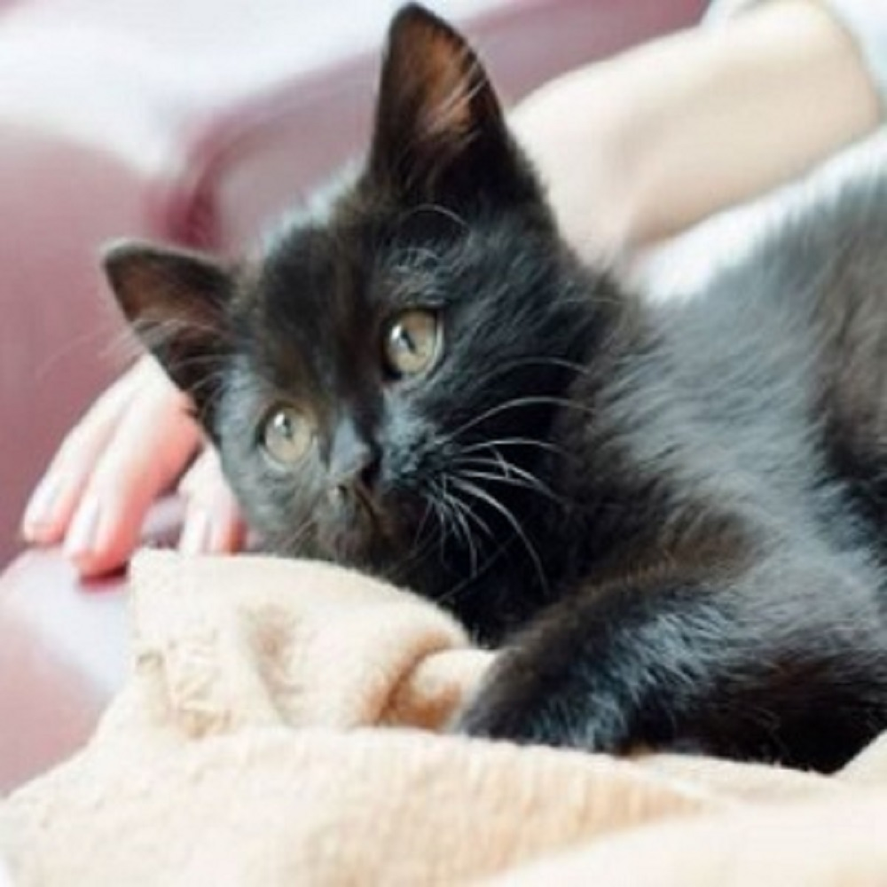
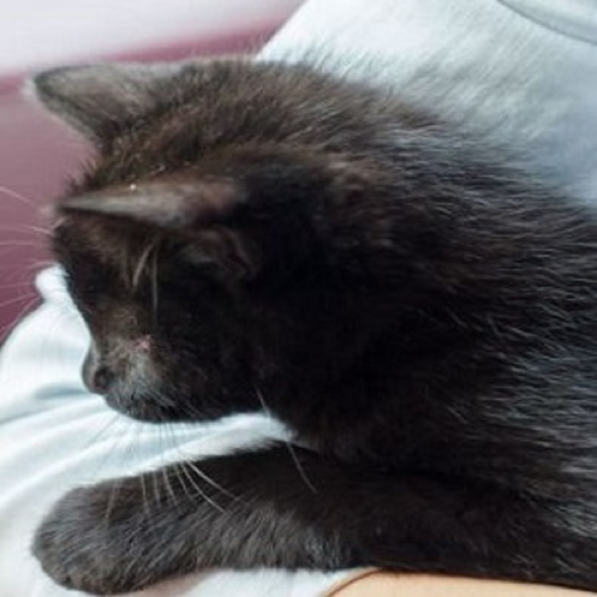
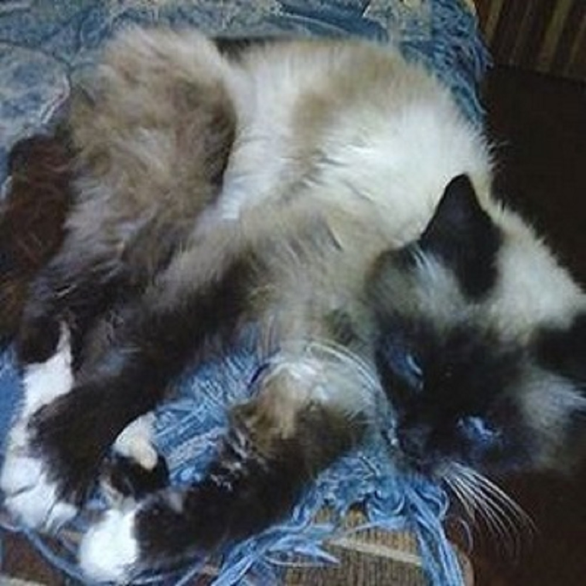
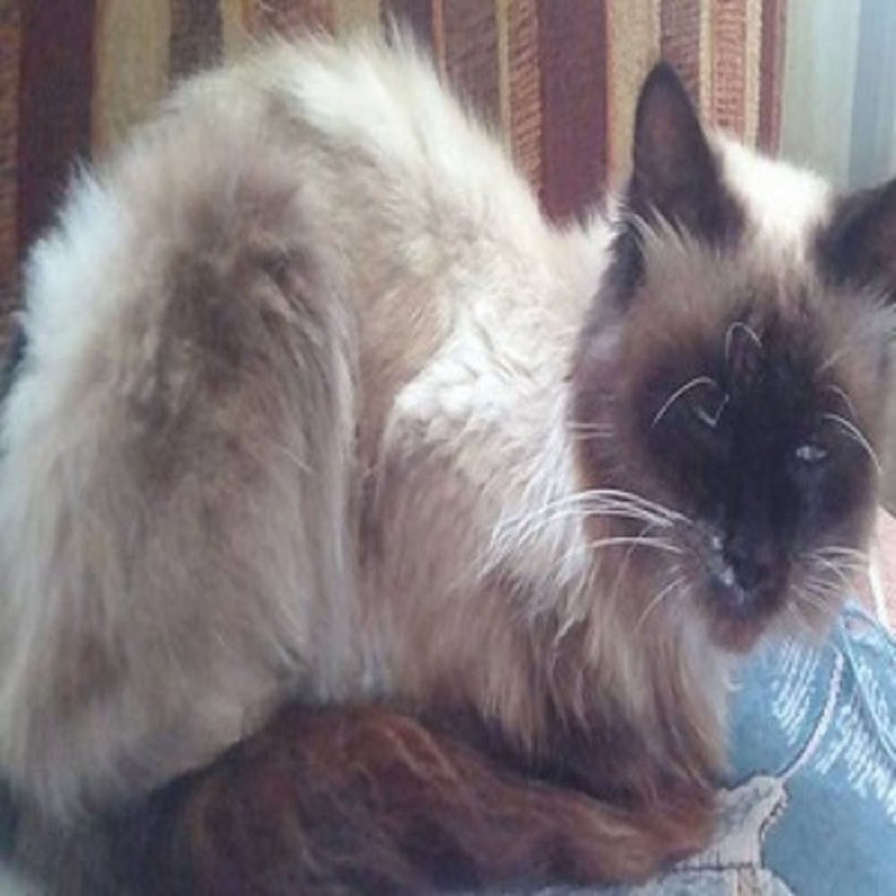

Ці котики шукають теплий дім


Сарацин
Порода: без. Колір: чорний. Вік:Котеня. Стерелізований: ні.
Опис:
А тепер хочемо вас познайомити з дивовижним кошеням, який вже підкорив ссердца блогерів. Але поки залишається без господаря і без постійного місця проживання.


Невідомо
Порода: без. Колір: черписний. Вік:дорослий. Стерелізований: ні.
Опис:
Знайдений на трасі в жахливому стані, брудний і худий.Зараз домашній, чистенький і дуже ласкавай,молоденький котик.